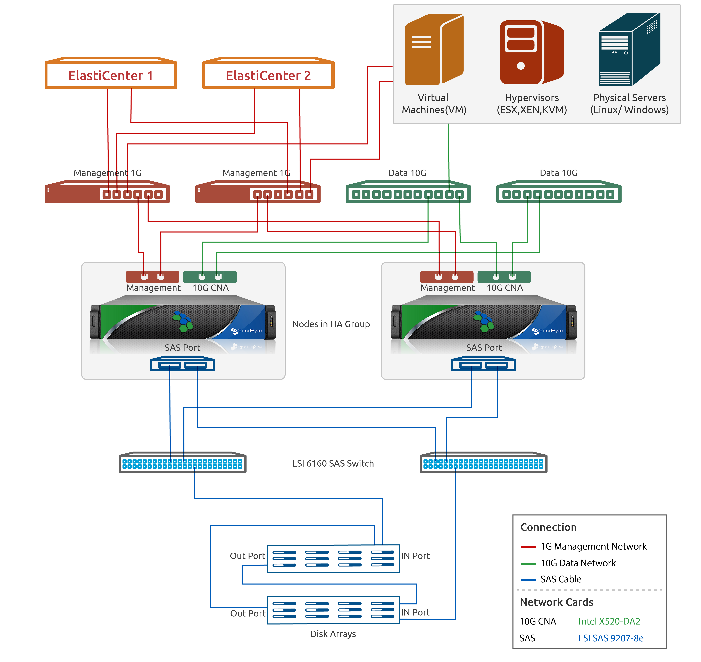

Configuring High Availability
CloudByte ElastiStor supports High Availability in two-way, three-way, and four-way configurations.
Note: SATA disks or any disk with SATA interface is not supported for HA and multipathing configuration.
HA Prerequisites
Ensure the following on all Nodes in the HA Group:
- JBOD (same capacity disks) is shared among all the Nodes in the HA Group
- Same NIC (for example, if em0 is the interface used on one Node, the same should apply for all Nodes) and same capacity Disks are shared (across the Nodes)
- Same system hardware configuration
- Identical SAS HBA (identical firmware and driver)
- Identical FC HBA (identical firmware and driver)
Procedures
The following procedures explain how to configure a two-way High Availability setup:
- Set up your hardware. For details see
- Create a Site. For details, see
- Create an HA Group. For details, see
- Add a Node (Node1). For details, see
- Label shared disks. For details, See
- Add Node 2. For details, see
When you specify the IP address range while adding the HA Group, ensure that you specify a range that matches the number of nodes you add.
Note: You can perform this step later, after you add all other Nodes. In that case, you have to refresh the hardware (Nodes > select specific Node > select Refresh Hardware in the Tasks section of the action pane) for labeling to take effect.
Now you have established a two-way HA. The following screen provides a visual representation of the configuration.
Proceed to create Pools, VSMs, and Storage Volumes.
Hardware setup diagram for High Availability

Bringing Node to maintenance mode
When you want to service your Node, change its status to maintenance mode. In this mode, the Node is up and controlled by the administrator, but is not an active part of the High Availability Group.
To bring a Node to maintenance mode,
- Select the Node that you want to bring to maintenance mode (ElastiCenter > Navigation Pane > Nodes).
- In the Node Page, go to the actions Icon and then click Change State icon. The change node of dialog box appears
- Select Maintenance as the state
- Optionally specify a reason for changing the state and then Click OK.
Take Over
When Node failure occurs, takeover happens as illustrated in the following screens:
- The following screen depicts the Node Page that lists a two-way HA. Here, Node 2 is in maintenance mode.
- In the following screen, Node 1 has taken over.
Note: In ElastiStor, every Node has a designated partner. If the Node goes down, the resources of that Node are failed over to the partner Node.
Making a Node available
After a downtime, when you bring up the Node, you have to manually change the status to Available.
- Select the Node that you want to bring up (ElastiCenter > Node).
- In the Node page, go to the actions Icon and then click Move to available icon.
- Select Available as the state.
- Optionally specify a reason for changing the state and then click OK.
HA Jobs
To view the details of the past High Availability events, perform the following procedures;
- (In ElastiCenter)In the HA Groups page, select an HA Group for which you want to view event details.
- In the Actions Icon, click View Jobs.
You can view the details of the past HA events and the time taken to perform these events as shown in the following screen: